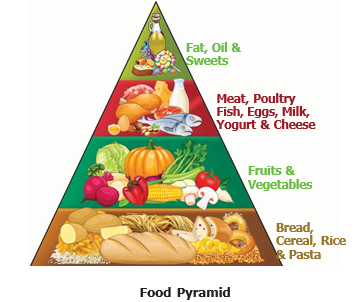
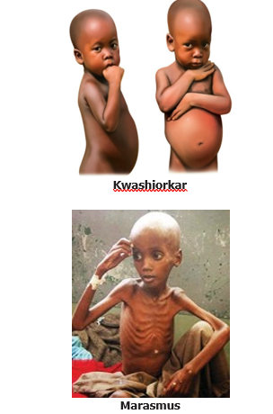

Table 2 Deficiency Diseases
Vitamin |
Sources |
Disease Defeciency |
Symptoms |
Vitamin A |
Fish oil, Egg, Milk, Ghee, Carrot, Corn, Yellow fruits, Greens |
Night blindness |
Poor vision, difficulty of sight in dim light. |
Vitamin B |
Whole grain, Unpolished rice, Milk, Fish, Meat, Peas, Lentils Green vegetables |
Beriberi |
Nerve weakness, Fatigue. |
Vitamin C |
Oranges, Gooseberry, Green chili, Tomato |
Scurvy |
Bleeding gums |
Vitamin D |
Fish oil, milk and eggs. It is also produced by our skin using sunlight |
Rickets |
Weak and flexible bones |
Vitamin E |
Vegetable oils, green vegetables, Whole wheat, Mango, Apple, Greens |
Nerve weakness, Vision deterioration. |
Sterility, lack of resistance power to illnesses |
Vitamin K |
Green vegetables, Tomato, Cabbage, Eggs, Milk products. |
Weakness of the bones, teeth etc. |
Profuse bleeding after a small injury |
Gooseberries contains nearly 20 times Vitamin C than Orange.
Just Think
A medical camp was conducted in a school. Most of the children were healthy. Some students had some health issues
Priya had bleeding gums.
Raja could not see clearly in dim light. Arun had bent legs.
Can you guess what could be the reasons?
Fact File
Sun screen lotion reduces your skin's ability to produce Vitamin D by upto 95% which may lead to Vitamin D deficiency.
Activity 6
Make your food little healthier. What do you need?
A small cup of green gram seeds, water and thin cloth.
How to do?
Soak the green gram seeds in water over night.
Take out the seeds and strain the water. Wrap the seeds in wet thin cloth.
Keep it for a day or two.
Sprinkle some water whenever it is dry.
What do you see?
You can see white sprouts coming out of the seeds.
What do you learn?
Green gram sprouts are low in calories, have fibre and Vitamin B. They have comparatively high amount of Vitamin C and Vitamin K.
Minerals
Minerals are required for growth as well as for the regulation of normal body function. Green leafy vegetables like spinach, pulses, eggs, milk, fish and fruits are important sources of minerals. Minerals are also a protective food.
Table 3 Minerals and their Functions
Minerals |
Functions |
Calcium |
Strong bones and teeth, Clotting of blood |
Phosphorus |
Strong bones and teeth |
Iodine |
Synthesis of thyroid hormone |
Iron |
Formation of haemoglobin and brain development |
Do you know?
80% of the Moringa leaves in the world are produced in India. The major countries which import Moringa leaves are China, US, Germany, Canada, South Korea and European countries.
Fact File
Moringa leaves are rich in Vitamin A Vitamin C Potassium Calcium Iron and Protein. They also contain powerful anti-oxidants.
Activity 7
Complete the following table
Serial Number. |
Nutrients |
Sources |
Functions |
1 |
Carbohydrates |
Rice, Wheat, Potato |
dash |
2 |
Fats |
dash |
Give us energy |
3 |
Proteins |
dash |
dash |
4 |
Vitamins |
Fruits, Vegetables, Grains, Meat and Dairy products |
dash |
5 |
Minerals |
dash |
Regulation of growth and normal body function |
Water
Our body needs an adequate supply of water in order to maintain good health. Any human being should take minimum eight tumblers (2 Litre) of water every day.
Look at the pictures given below. Mark cross for unhealthy persons tick for healthy persons.
Health is a state of complete physical, mental and social well-being and not merely absence of diseases. Eating a healthy diet keeps you physically and mentally fit. When you are physically healthy, you feel confident, you are more outgoing and have a greater capacity for enjoying life.
Unhealthy food choices lead to obesity and illness, preventing you from socializing with friends and family. So choose your diet carefully.
Balanced Diet
A diet should contain adequate amount of all the necessary nutrients required for healthy growth and activity.

A balanced diet contains sufficient amount of various nutrients to ensure good health. Balanced diet is important for the following reasons.
•It increases the capacity to work.
•It gives good physical and mental health.
•It increases the capacity to resist diseases.
•It helps in proper growth of the body.
Activity 7
Prepare a diet chart to provide balanced diet to a 12-year-old boy or girl. The diet chart should include food item which are not expensive and are commonly available in your area.
Malnutrition
When your diet is not balanced, what would be the consequence? Observe the below picture carefully.
•Do these children look normal?
•Guess, what would be the reason.

These children do not have normal health because of malnutrition.
Malnutrition occurs when all the nutrients that the body needs are not obtained in the proper proportions from the diet. The word malnutrition refers to the condition that results when a person does not take a balanced diet. Malnutrition leads to deficiency diseases. The diseases that are caused due to lack of nutrients in the diet are called deficiency diseases.
Do you know?
India has the second largest number of obese children in the world after China. According to a study it has been found that 14.4 million children in the country have excess weight.
Table 5 Protein deficiency diseases
Deficiency Diseases |
Symptoms |
Kwashiorkar |
Stunted growth, Swelling of face, limbs and belly, Diarrhoea. |
Marasmus |
Skinny appearance, Slow body growth. |